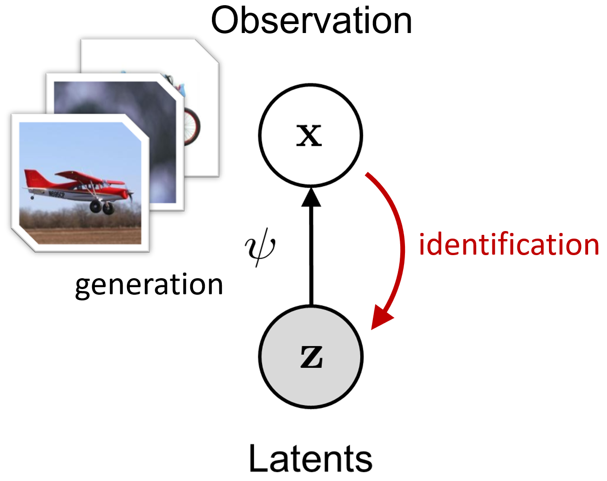
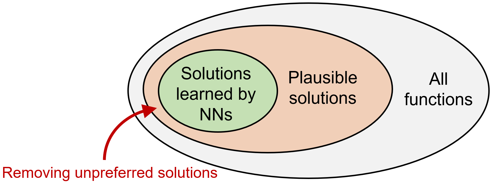
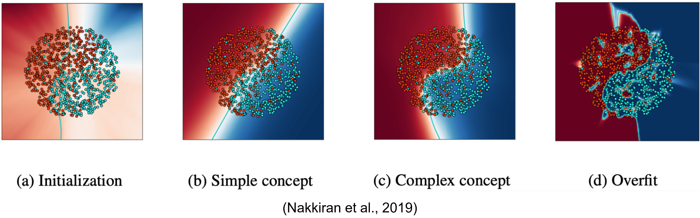
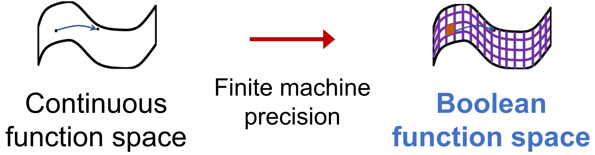
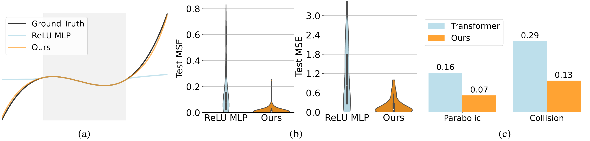

What is the "Correct" Definition of World Modeling?
[Paper link]By 2025, most people in AI have heard more or less about world models. As foundation models have improved rapidly over the past two years—reaching or even surpassing human-level performance in many aspects—our expectations have risen accordingly. The term "world model" captures one particularly important expectation: can a model understand the world and predict how it will evolve, the way humans do?
In recent years, many works related to world models have emerged across subfields such as large language models (LLMs), reinforcement learning (RL), and video generation. Yet there is an awkward reality: the phrase "world model" still lacks a universally accepted, rigorous definition. As a result, its meaning varies across papers and communities, which easily leads to confusion.
In April 2025, I attended the first World Models Workshop at ICLR 2025. The panel featured many prominent researchers (Chelsea Finn, Stefano Ermon, Jürgen Schmidhuber, David Ha, Jeff Clune, Kun Zhang, …). Interestingly, one of the panel questions was exactly: "What do you mean by a world model?" The answers differed substantially—showing that even today, when the concept has gained wide attention (and plenty of hype), we still lack consensus on fundamental questions such as "What is a world model?" and "When can we say a neural network has learned one?"
Against this backdrop, this post (i) reviews common notions of world models across AI, and (ii) introduces our ICML 2025 paper When Do Neural Networks Learn World Models? The work was also presented as an oral at the ICLR 2025 World Models Workshop and received the Outstanding Paper Award.
In brief, our paper:
- proposes a general mathematical definition for learning world models;
- highlights a key difficulty: non-identifiability;
- connects neural-network inductive bias (especially simplicity bias) to world-model learning, and provides sufficient conditions under which a class of world models becomes identifiable.
We hope that introducing a mathematical definition and an analysis framework makes "world models" a topic that can be discussed and studied rigorously, and we welcome further discussion.
Background
This section briefly summarizes several common usages of "world model" in AI.
World models in RL. The work that arguably popularized the term in machine learning is the 2018 paper "World Models" by David Ha and Jürgen Schmidhuber [1]. In that RL setting, a "world model" is essentially the model in model-based RL: a predictive model that forecasts future states from the agent’s past states and actions. Concretely, the world model in [1] can be viewed as two parts: an encoder that learns representations of states, and a dynamics model that predicts in the representation space. Much subsequent work in RL and robotics has inherited this naming convention.
Mental models in cognitive science. As noted in [1], this design is partly inspired by the notion of mental models in cognitive science: "an internal representation of external reality" [2]. Such representations can support downstream tasks like reasoning and decision-making. In modern ML terms, this aligns naturally with representation learning.
World models in LM/LLM research. In LMs/LLMs, the notion is close to mental models: the goal is to examine whether internal representations learned by an LM/LLM can be decoded into environment states or human-interpretable high-level semantics (e.g., time, space, truthfulness). Representative works include [3] and [4]. Since these are largely interpretability studies of intermediate representations, the phrase world representations is also commonly used.
World models in video generation. More recently, video-generation systems such as OpenAI’s Sora and DeepMind’s Veo have reignited interest in world models. Here the focus is on next-frame prediction, with the implicit premise that generating high-quality videos conditioned on prompts/frames amounts to modeling the real world. In analogy to RL, video frames can be treated as "states" being predicted, except that "actions" are often not modeled explicitly. More recently, several works explore action-conditioned video generation (e.g., DeepMind’s Genie 3, World Labs’ Marble, Meta’s V-JEPA2 [5]).
In summary, while these usages differ in implementation details, they largely share two core ingredients: representation and prediction. In ML terms, the former corresponds to an encoder that learns representations from raw inputs/states, and the latter to a decoder/dynamics head that predicts future inputs/states from learned representations—matching the intuitive ideas of "understanding the world" and "predicting the world."
However, an immediate question arises: are all models that contain representation + prediction automatically "world models"? Clearly not. A purely structural definition is trivial. In practice, what we really care about is generalization, not whether a model merely matches a formal architecture. For instance, we only believe a video generator has learned something like a world model if its generated videos respect physical laws and avoid low-level inconsistencies.
So what would be a reasonable mathematical definition of a world model? We argue the key is to characterize what kind of representation has been learned. Still using video generation as an example: among models that achieve the same minimal training loss, one model might extract true physical regularities, while another might simply memorize patterns in the training videos. Their training losses look identical, but their learned representations are fundamentally different—and only the former generalizes.
This leads to our main argument:
Learning a world model should be defined as a special form of representation learning.
A mathematical definition of world models
Here we present our formulation of world modeling:
Definition 1 (world model). Assume observations \( \mathbf{x}\in\mathcal{X} \) are generated from latent variables \( \mathbf{z}\in\mathcal{Z} \) through an invertible transformation \( \mathbf{x}=\psi(\mathbf{z}) \). If a representation \( \Phi:\mathcal{X}\to\mathcal{Z} \) satisfies, for any \( \mathbf{x} \) and some transformation \( T \) on \( \mathcal{Z} \),
\( \Phi(\mathbf{x}) = T(\mathbf{z}) \), then we say \( \Phi \) has learned a world model up to \( T \).
This definition has two key elements: it
- posits that real data are produced by latent variables via a (nonlinear) generative process, and
- defines a world model as representation learning that recovers true latents from observations (up to a "simple" ambiguity \(T\)).
When \(T\) is the identity, learning a world model is exactly learning \(\psi^{-1}\).

Why assume a generative model? Because real data inevitably have structure: although \(\mathbf{x}\) may be high-dimensional, its "core semantics" are often described by a lower-dimensional latent vector. For images, one may regard \(\mathbf{z}\) as encoding object attributes, spatial relations, and physical regularities; the image \(\mathbf{x}\) is then rendered from \(\mathbf{z}\) by a complex nonlinear function \(\psi\). Typically, \(\dim(\mathbf{z}) \ll \dim(\mathbf{x})\), which is why real-world data tend to be highly compressible compared with unstructured white noise.
Conversely, if a model can invert this process—i.e., identify the latent variables \(\mathbf{z}\) from \(\mathbf{x}\)—then it has captured "how the data are generated." In practice, using \(\mathbf{z}\) as a representation of \(\mathbf{x}\) yields strong generalization; for example, physical regularities extracted from training data may transfer to out-of-distribution scenarios.
In one sentence:
A world model is an "inverse" of real observations.
Of course, exact inversion is often unnecessary and overly strict. Downstream-optimal representations are rarely unique—humans, for example, can use multiple natural languages to express high-level abstractions of the same world. Therefore, we relax the requirement by allowing a transformation \(T\). Importantly, \(T\) cannot be arbitrarily complex (otherwise the definition becomes trivial again). In practice, \(T\) is intended to come from a "simple" family—e.g., linear transforms.
Readers familiar with nonlinear ICA or causal representation learning may find this definition reminiscent. Indeed, our setting falls under latent-variable learning. A key difference, however, is that we do not impose additional structural assumptions on the latent variables \(\mathbf{z}\) (i.e., on the data structure). As we will see, this difference highlights a fundamental challenge of world-model learning.
The core challenge: identifiability
Given Definition 1, the difficulty becomes clear: we do not know the true generative model, and we cannot directly observe \(\mathbf{z}\). How can we ensure the learned representation relates to the true latent variables?
Mathematically, this is the classic problem of identifiability in latent-variable modeling: if there exists an algorithm that can uniquely recover \(\mathbf{z}\) from observations \(\mathbf{x}\), then \(\mathbf{z}\) is identifiable. If the true data-generation process yields identifiable latents, then learning a world model is possible.

Unfortunately, identifiability typically requires additional assumptions. In fact, it is known that without restrictions on the structure of \(\mathbf{z}\) or the form of \(\psi\), \(\mathbf{z}\) is generally not identifiable [6]. The reason is that the same observed distribution can correspond to infinitely many essentially different pairs (latent variables, generative functions), and we have no way to tell which one is the true generative model.
To address non-identifiability, prior approaches often impose structural assumptions, for example: \(\psi\) is linear; the dimensions of \(\mathbf{z}\) are independent (nonlinear ICA); or the dependencies among latent dimensions follow an (intervenable) causal graph (causal representation learning), etc.
However, while these assumptions help obtain identifiability in theory, they also limit applicability. Moreover, modern foundation-model pretraining is often simple and scalable, centered on generic proxy objectives, and it does not obviously satisfy those strong structural assumptions.
From that perspective, one might conclude that pretraining cannot guarantee identifiability of world models. Yet many recent works suggest that large models are not merely "stochastic parrots": they can learn non-trivial representations of data-generation processes [3], and some representations even align with human-level abstractions [4]. This apparent tension motivates a question:
Can there exist identifiability conditions that do not rely on explicit structural assumptions on the observed data, but instead can be exploited by the model itself—through inductive bias—to achieve world-model identifiability?
We attempt to answer this question below.
Simplicity bias and Boolean modeling
The "enemy" of identifiability is multiplicity of solutions: for the same observation \(\mathbf{x}\), there may be many distinct latent explanations \(\mathbf{z}\). Since these explanations can match the data equally well, the training loss alone cannot tell us which one the model learned.

Our idea is to leverage the model’s inductive bias. For over-parameterized neural networks, there are often many solutions that fit the training objective. Empirically and theoretically, networks do not pick among these solutions uniformly at random—they exhibit preferences not explicitly encoded in the loss. Such inductive biases can act as an additional filter over multiple solutions and are widely believed to be a key reason deep networks generalize [8].

In this work, we focus on a broadly observed inductive bias: simplicity bias—the tendency of neural networks (trained with standard optimizers like SGD) to favor "simpler" / lower-complexity solutions among those that fit the training data. In the example figure (from [9]), SGD tends to learn low-complexity linear decision boundaries first and only gradually transitions to more complex nonlinear boundaries. This preference for simpler functions is an instance of simplicity bias.
Simplicity bias also plays a central role in human inductive reasoning. Consider the sequence 2, 4, 6, 8, … . Although infinitely many continuations are possible, most people immediately predict "10," implicitly applying "simpler answers are more likely correct." This is essentially an Occam’s razor principle: simpler hypotheses often generalize better.
To analyze the effect of simplicity bias, we still need a way to measure the simplicity/complexity of learned functions. This is more subtle than it seems. While we may intuitively say "quadratic is more complex than linear," it is hard to define a universal complexity measure for arbitrary functions. Kolmogorov complexity is universal but uncomputable; practical approximations often rely on specific compression schemes or are context-dependent.

Fortunately, in neural-network settings we can exploit a basic fact: computers ultimately process discrete variables. Any discrete variable can be encoded losslessly by a binary (Boolean) sequence. Therefore, without loss of generality we assume \(\mathcal{X}=\{-1,1\}^m\) and \(\mathcal{Z}=\{-1,1\}^d\) (\(m\ge d\)). The generative function \(\psi\) then becomes a Boolean function.
This does not automatically solve the complexity-measure issue—Boolean functions can still be arbitrarily complex. The key is that the Fourier–Walsh transform provides a natural description of Boolean-function complexity.
Definition 2 (Fourier–Walsh expansion) [10]. Any Boolean function \(f:\{\pm 1\}^n \to \mathbb{R}\) can be uniquely represented as a multilinear polynomial:
$$ f(\mathbf{x})=\sum_{S\subseteq [n]} \hat{f}(S)\,\chi_S(\mathbf{x}). $$
where \( \mathbf{x}=(x_1,\ldots,x_n) \), \( \chi_S(\mathbf{x})=\prod_{i\in S} x_i \) are parity functions (monomials), and \( \hat{f}(S) \) are the coefficients.
Thus, no matter how complex f is, it is a linear combination of parity functions; the "nonlinearity" is captured by which parity terms are used. For example, on \(\{\pm 1\}^2\), the max function \(f(x_1,x_2)=\max(x_1,x_2)\) can be written as
$$ f(x_1,x_2)=\tfrac{1}{2}+\tfrac{1}{2}x_1+\tfrac{1}{2}x_2-\tfrac{1}{2}x_1x_2. $$
We can then define the complexity of \(f\) as the highest order of parity terms it uses—its degree, denoted \(\deg(f)\). For instance, \(\deg(\max)=2\); and for \(f(x_1,x_2,x_3,x_4)=(1/2)x_1x_2x_3+2x_4\), we have \(\deg(f)=3\).
Intuitively, degree measures the extent of nonlinearity. One may also view it as a proxy for Kolmogorov complexity by interpreting degree as a kind of code length needed to describe the function.
This Boolean modeling makes the analysis tractable because parity functions form a basis for Boolean function space; a function’s complexity can be defined via its expansion over this basis. For general continuous-function spaces, such a universally convenient basis does not exist, making "fair" complexity comparison much harder.
A "no free lunch" theorem for representations and world-model identification
Before presenting the main results, we clarify some definitions. Under our view, world-model learning is a form of representation learning, which in practice is achieved through various proxy tasks (supervised classification, contrastive learning, next-token prediction, etc.).
Consider a task \(h\): \(\mathcal{X}\to \mathbb{R}\). A model can solve it in two ways:
- Flat realization: fit a function \(h*\) end-to-end to approximate \(h\), without explicitly learning a latent representation.
- Hierarchical realization: decompose \(h\) as \(h = g \circ \Phi\), where \(\Phi\): \(\mathcal{X}\to \mathcal{Z}\) is a representation function and \(g: \mathcal{Z}\to \mathbb{R}\) is a predictor, and then learn \(\Phi\) and \(g\).
World-model learning aims for hierarchical realizations with \(\Phi = T \circ \psi^{-1}\).
Using Fourier–Walsh degree, we can measure the complexity of these realizations: the flat realization has complexity \(\deg(h^\star)\); the hierarchical realization fits \(\Phi\) and \(g\) separately, so we measure its total complexity as \(\deg(\Phi)+\deg(g)\). This lets us analyze how simplicity bias affects representation learning.
Single-task learning: a "cold shower"
We first show that single-task learning is not enough: under simplicity bias, the lowest-complexity solution tends to be a flat realization.
Theorem 1 (Single-task). For any task \(h\): \(\mathcal{X}\to \mathbb{R}\), among all realizations of \(h\), the minimum-complexity solution is some flat realization satisfying
$$ \deg(h^\star) \le \deg(\Phi) + \deg(g),\quad \text{for all }\Phi,g. $$
Intuitively, learning a latent representation solely for one task is often not "worth it". In Fourier–Walsh terms, any single task \(h\) uses only a finite set of basis terms; even if there exists a universal representation \(\Phi\), it may contain extra basis terms irrelevant for \(h\), increasing complexity.
As an analogy: if your only goal is to solve equations of the form x³ = a, you would not build a general cubic formula—you would just take cube roots directly. This also helps explain why networks often learn non-generalizing shortcuts when the data distribution is narrow or biased [11].
Multi-task learning: shared representations can become cheaper
What if we train on more than one task? We show that multi-task learning can change the outcome: sharing a representation across tasks can make hierarchical realizations more efficient.
We introduce the conditional degree of a task under a representation:
Definition 3 (Conditional degree). For a task \(h: \mathcal{X}\to \mathbb{R}\) and a representation \(\Phi\): \(\mathcal{X}\to \mathcal{Z}\), define
$$ \deg(h \mid \Phi) = \deg(h^\star) - \max_{g}\,\{\,\deg(g) : h = g \circ \Phi\,\}. $$
If introducing \(\Phi\) reduces the complexity of solving \(h\) (relative to the best flat solution), then \(\Phi\) has positive value for \(h\). If sufficiently many tasks become simpler due to the same \(\Phi\), a simplicity-biased learner will prefer to learn \(\Phi\). We prove:
Theorem 2 (Multi-task). For distinct tasks \(h_1, ..., h_n\), if there exists \(\Phi\): \(\mathcal{X}\to \mathcal{Z}\) such that
$$ \sum_{i=1}^{n} \deg\!\bigl(h_i \mid \Phi\bigr) > d^2. $$
where \(d = \dim(\mathcal{Z})\), then the total complexity of hierarchical realizations \(g_i \circ \Phi\) is lower than independently learning flat realizations for each task.
In practice, proxy objectives used in pretraining (next-token prediction, contrastive learning, masked modeling, etc.) can often be understood as implicit multi-task learning [12]. Theorem 2 provides theoretical justification that multi-task training encourages the emergence of shared representations under simplicity bias.
Multi-task is not enough: the representation NFL theorem
Does multi-task learning guarantee learning a world model? No. Theorem 2 says multi-task encourages representation learning, but it does not specify what representation will minimize complexity.
As a starting point, we analyze the case where tasks are sampled uniformly from the entire task space (all Boolean functions \(h:\{\pm 1\}^n\to \mathbb{R}\)). We obtain:
Theorem 3 (A "no free lunch" theorem for representations). If tasks are sampled uniformly from the full task space, then for any invertible transform \(T\) on \(\mathcal{Z}\), the representation \(\Phi = T \circ \psi^{-1}\) has the same expected complexity across tasks (in the limit of infinitely many tasks).
That is, under a uniform task distribution, the average complexity is the same for any sufficiently informative representation.
By analogy with the classic No Free Lunch (NFL) theorem [13]—which says all learning algorithms have equal average performance over all tasks—we call Theorem 3 the representation NFL theorem: averaged over all tasks, any information-preserving representation has the same average complexity. Therefore, even in multi-task settings, if tasks are uniformly distributed, simplicity bias cannot identify the world model.
A simple intuition is that for any representation, some tasks become "easy" and others "hard." For example, a semantic image representation makes classification/segmentation easy, but may not help for "predict the RGB value of the center pixel." Averaging over the full task space, easy and hard tasks cancel out.
Real tasks are not uniform: low-degree bias yields world-model identifiability
Fortunately, real-world tasks are not uniformly distributed. Most tasks humans care about are highly related to "semantics." In language, this bias can be even stronger: the abstractness of language and the requirement of semantic coherence filter out many unreasonable tasks.
Mathematically, we can model this as a low-degree bias: compared with a uniform distribution, the real task distribution assigns higher probability to functions of the true latent variables that have lower Fourier degree. Interestingly, we prove that even a slight low-degree preference is sufficient: under simplicity bias, the minimal-complexity representation becomes the desired world model (up to simple symmetries).
Theorem 4 (A sufficient condition for world model identification). If the task distribution places higher density than the uniform distribution on sufficiently low-degree tasks, then the optimal representation \(\Phi^\star\) under simplicity bias satisfies
$$ \Phi^{\star}(\mathbf{x}) = P D\,\mathbf{z}. $$
where \(P\) is a permutation matrix, \(D\) is a diagonal \(\pm 1\) matrix, and \(\mathbf{z}=\psi^{-1}(\mathbf{x})\).
Equivalently, \(\Phi^\star\) identifies the world model up to permutation and bitwise negation. These ambiguities are very simple: the learned representation differs from the true latent variables only by reordering dimensions and flipping signs, without fundamentally changing the latent structure.
Connection to the Linear Representation Hypothesis (LRH). LRH is a well-known hypothesis in LM/LLM research: intermediate representations in LLMs often align with human-interpretable high-level semantics, and these semantics are linearly represented in the embedding space [3,4]. While LRH is often viewed as evidence that large models "truly understand" aspects of data generation, its mechanism is still debated. If we interpret high-level semantics as latent variables of a world model, then Theorem 4 can be seen as a provable Boolean analogue of LRH: permutation and sign flip correspond exactly to all first-order Boolean functions; over the reals, they naturally correspond to linear functions.
Putting the pieces together, we obtain a fairly comprehensive sufficient condition:
When the model exhibits simplicity bias, is trained with multi-task objectives, and the task distribution has some low-degree preference, the world model becomes identifiable.
Compared with prior analyses that obtain identifiability by imposing strong structural assumptions on data generation, our results place fewer requirements on the data and instead emphasize the model and task distribution—a perspective that we believe is more compatible with modern pretraining paradigms.
We further analyze a key advantage of world models: out-of-distribution (OOD) generalization. In a setting related to length generalization, we show that under certain conditions on downstream tasks, hierarchical realizations with world models have provably smaller OOD generalization error than flat realizations. Due to space limits, please see Section 4.3 of the paper for details.

So far we have mainly discussed how simplicity bias and task distributions in function space can induce world-model identifiability. In practice, neural-network architectures can significantly affect which function families are preferred. In our paper, we also formalize how architectural design can influence identifiability by changing the "function basis" of Boolean function space.
Based on the theory, we designed a series of proof-of-concept experiments in controlled environments to validate the effects of multi-task training and simplicity bias on world-model learning. Guided by the theoretical findings, we also modified standard MLP and Transformer architectures on two representative tasks, achieving better extrapolation and generalization. Interested readers can refer to the paper for details.
Summary and outlook
From the perspective of identifiability, we proposed a definition of world-model learning and systematically analyzed when neural networks can learn world models:
- Multi-task learning: good representations do not naturally emerge under a single task, while multi-task training creates pressure to learn shared representations;
- Simplicity bias: the intrinsic simplicity bias of neural networks and optimization is a key force for breaking non-identifiability;
- Low-degree task distributions: only when training tasks have a preference toward low-degree functions does the world model become reliably identifiable in multi-task learning.
These results can also inform algorithm design. We believe that shaping the task distribution and architectural choices to increase the "low-degree" nature of proxy objectives may be crucial for faster and more accurate emergence of world models. Concretely, constructing "lower-degree" self-supervised tasks may help models capture the core latent variables in data generation. For instance, representation-level prediction may be preferable to pixel/token-level prediction—an idea reflected in several recent pretraining works [14–16]. More specifically, training pipelines for LLMs or multimodal models could include auxiliary low-degree objectives related to world regularities (commonsense reasoning, basic physical-law prediction, etc.). In video/multimodal models, proxy tasks such as inferring velocity and acceleration could further regularize representations. Designing a differentiable complexity measure for regularization is also an interesting direction.
Finally, we hope this work provides a starting point for future theoretical studies on world models, and offers one possible theoretical lens for understanding and guiding capability evolution of foundation models through representation learning. Inevitably, parts of this post remain rough; feedback is very welcome. Looking ahead, we also hope world models will create broader practical impact beyond video generation, such as in embodied intelligence.
References
[1] Ha, D. and Schmidhuber, J. World models. arXiv:1803.10122, 2018.
[2] Craik, K. J. W. The Nature of Explanation. CUP Archive, 1967.
[3] Li, K., Hopkins, A. K., and Bau, D. Emergent world representations: Exploring a sequence model trained on a synthetic task. ICLR, 2023.
[4] Gurnee, W. and Tegmark, M. Language models represent space and time. ICLR, 2024.
[5] Assran, M. et al. V-JEPA 2: Self-supervised video models enable understanding, prediction and planning, 2025.
[6] Hyvärinen, A., and Pajunen, P. Nonlinear independent component analysis: Existence and uniqueness results. Neural Networks, 12(3), 429–439, 1999.
[7] Khemakhem, I., Kingma, D. P., Monti, R. P., and Hyvärinen, A. Variational autoencoders and nonlinear ICA: A unifying framework. AISTATS, 2020.
[8] Zhang, C., Bengio, S., Hardt, M., Recht, B., and Vinyals, O. Understanding deep learning requires rethinking generalization. ICLR, 2017.
[9] Nakkiran, P., Kaplun, G., Kalimeris, D., Yang, T., Edelman, B., Zhang, F., and Barak, B. SGD on neural networks learns functions of increasing complexity. NeurIPS, 2019.
[10] O’Donnell, R. Analysis of Boolean Functions. arXiv:2105.10386, 2021.
[11] Geirhos, R. et al. Shortcut learning in deep neural networks. Nature Machine Intelligence, 2(11), 665–673, 2020.
[12] Radford, A. et al. Language models are unsupervised multitask learners, 2019.
[13] Wolpert, D. H. The lack of a priori distinctions between learning algorithms. Neural Computation, 8(7), 1341–1390, 1996.
[14] Ren, S., Wang, Z., Zhu, H., Xiao, J., Yuille, A., & Xie, C. Rejuvenating Image-GPT as strong visual representation learners. ICML, 2023.
[15] Yu, S., Kwak, S., Jang, H., Jeong, J., Huang, J., Shin, J., & Xie, S. Representation alignment for generation: Training diffusion transformers is easier than you think. ICLR, 2025.
[16] Tack, J., et al. LLM pretraining with continuous concepts. arXiv:2502.08524, 2025.